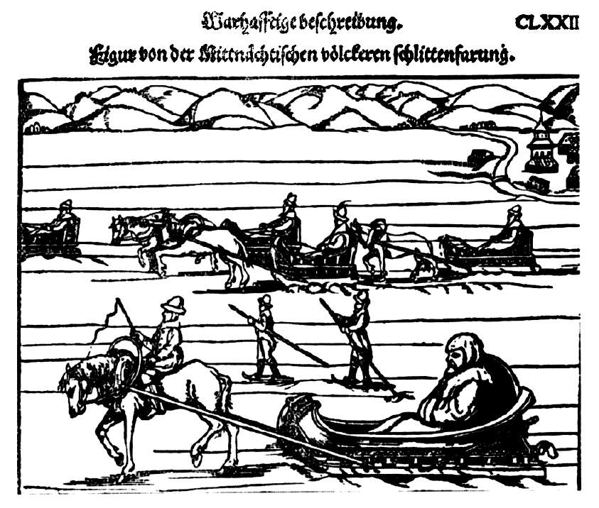

中国与西方之间，直到欧洲继哥伦布和葡萄牙航海者远航探险之后、进行海外扩张时，才持续不断交往起来。1514年，葡萄牙商人与广州通商，1557年，他们又在澳门设立了永久的商业根据地；这时，中国开始直接感受到生气勃勃的新兴欧洲的影响。这些葡萄牙人收购中国的丝织品、木刻品、瓷器、漆器和黄金；同时，作为回报，他们又推销东印度群岛的肉豆蔻、丁香和肉豆蔻干皮，帝汶岛的檀香，爪哇岛的药材和染料，以及印度的肉桂、胡椒和生姜。欧洲的货物一样也没卷入；原因很简单，它们在中国没有市场。这些葡萄牙人纯粹充当着亚洲内部贸易的运货人和中间人的角色。
17世纪早期，荷兰人和英国人终于前来，向葡萄牙对中国贸易的垄断地位发起挑战。他们均未得到中国官方关于通商的许可，因此，在此后数十年中，荷兰人和英国人一直在中国南方沿海一带劫掠葡萄牙人的商船，并进行非法贸易。到18世纪中叶，中国人向所有国家开放贸易，不过，贸易地点仅限于广州和澳门。英国人不久便获得了这一贸易的最大部分；这一方面是因为他们日渐增长的商业和工业优势，一方面是因为他们设在印度的无可比拟的活动根据地。

图129 俄国远东扩张图。俄国人横穿西伯利亚地区，沿黑龙江设置贸易站，企图开通与中国的贸易关系。以基督教传教士作为翻译和顾问，中俄《尼布楚条约》于1689年签订。
当时，西伯利亚的俄国人也正在试图开展同中国的贸易关系。中国人以同样方式做出反应：严密地控制和限制贸易。《尼布楚条约》（1689年）和《恰克图条约》（1727年）规定，俄国人可以在两国的三个邻接点经商，每隔三年方可派遣商队前往北京。中国人允许他们在北京建一所教堂，留一名牧师和三名副牧师，不过，其教团在中国京城的人数限制在300人。在这些条件下，少数货物得到交换——俄国用毛皮、皮革制品、纺织品、牛、马和玻璃制品交换中国的丝绸、茶、漆器和瓷器。
在这些较早的世纪里，中国和西方在文化上的相互影响，仅限于耶稣会会士努力传布他们的宗教信仰方面。耶稣会数世纪的传教活动的最终结果已被证明是微不足道的。实际上，当时，中国的考试制度和儒家伦理观给欧洲留下的印象，较之欧洲的科学和数学给中国留下的印象，要深刻得多。中国人依然极度自信和自足。他们将西方商人限制在极少数海港和边境贸易站；处理国际事务时，些许例外也仅仅是承认纳贡关系；他们只是对耶稣会关于科学和神学的教导表示过一时的兴趣，但这些教导最终还是为他们所抛弃和遗忘。有史以来，极少有一个民族面对未来如此自信，却又对即将到来的风暴如此缺乏了解。